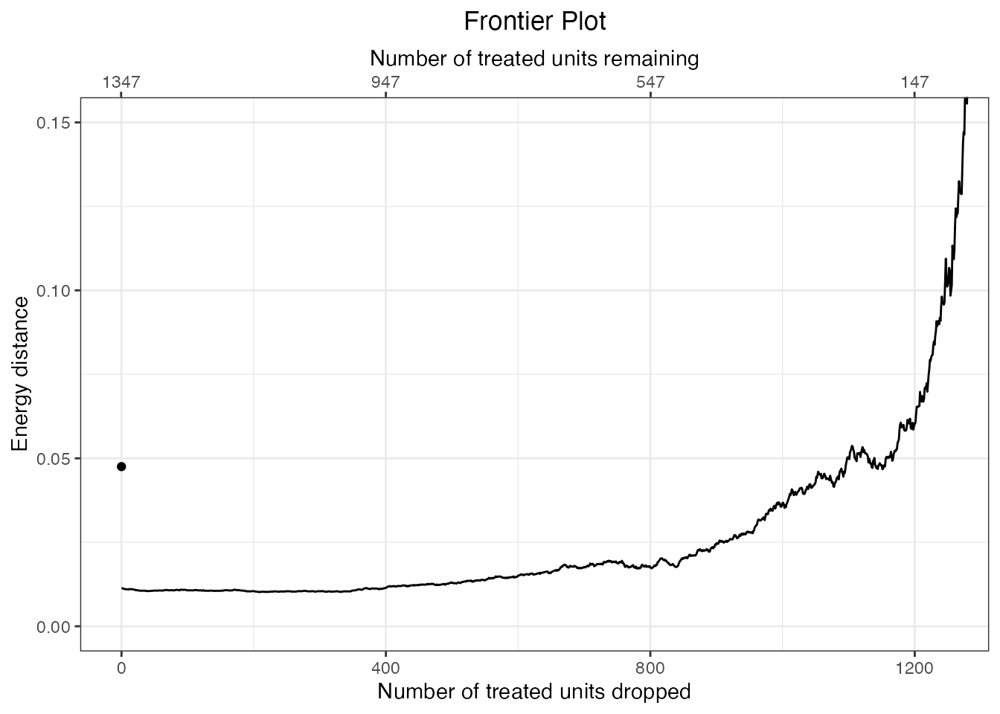
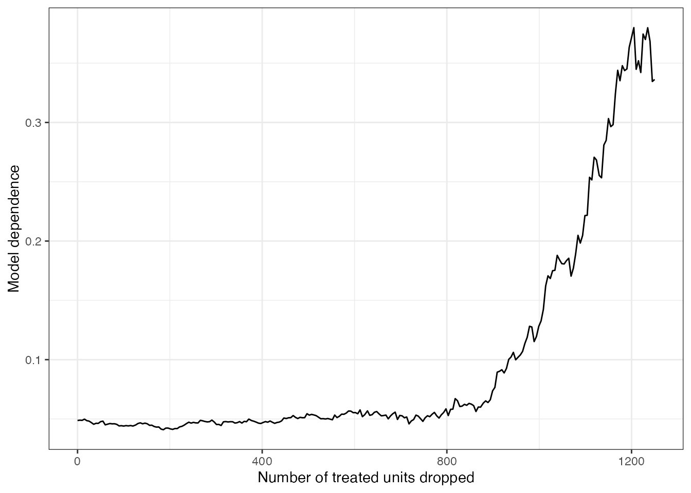

vignettes/psm-paradox.Rmd
psm-paradox.RmdThe propensity score matching (PSM) paradox is feature of PSM highlighted in King and Nielsen (2019) “Why Propensity Scores Should Not Be Used for Matching” that serves as one of the reasons the authors warn against using PSM to balance covariates and estimate causal effects. The paradox is described in King and Nielsen (2019) (hereafter KN19) as follows:
…[A]fter PSM’s goal of complete randomization has been approximated […], pruning the observations with the worst matched observations, according to the absolute propensity score distance in treated and control pairs, will increase imbalance, model dependence, and bias; this will also be true when pruning the pair with the next largest distance, and so on.
The reason this is so pernicious is that the point of PSM is to decrease imbalance, and applying a caliper to the propensity score to ensure matches are close can have the opposite effect of making balance worse. That is, by restricting the matches so that only the closest pairs remain, balance can be worse than were the far apart pairs to remain. This is a feature other matching methods do not share with PSM (at least not to the same degree), which is why KN19 argue PSM is suboptimal and other methods, like Mahalanobis distance matching or coarsened exact matching, should be used instead.
MatchingFrontier
KN19’s analysis of the PSM paradox in real and simulated datasets involved performing a propensity score match, pruning the most distant pairs one-by-one (i.e., imposing a stricter and stricter caliper), and measuring balance at each point. In this way, studying the PSM paradox is similar to creating a matching frontier, which also involves dropping units one-by-one starting with the most distant units. Given this similarity, as of version 4.1.0, MatchingFrontier includes tools to analyze the PSM paradox in supplied data using some of the same technology used to create and examine a matching frontier. We demonstrate these methods below.
The procedure to study the PSM paradox proceeds in the following steps:
Perform PSM using MatchIt::matchit()
Create a balance-sample size “frontier” using makeFrontier()
Examine model dependence using estimateEffects()
We will use the finkel2012 dataset in MatchingFrontier to study the PSM. See help("finkel2012", package = "MatchingFrontier") for more information. This dataset comes from Finkel, Horowitz, and Rojo-Mendoza (2012) and was used in KN19 to study the PSM paradox. The important points are that the treatment is treat, the outcome is polknow, and the other variables are covariates. No specific estimand or quantity of interest was specified as the target estimand in the original study; because the analysis presented below and used in Finkel, Horowitz, and Rojo-Mendoza (2012) involves discarding treated units, the feasible SATT (FSATT) becomes the target of inference.
library(MatchingFrontier)
data("finkel2012")
head(finkel2012)## treat uraiamedia age churchgo groupactive income groupleader male educ religion media polinterest poldiscuss civicgroup polparty polknow
## 1 1 1 38 4 1.0000000 4 1 1 8 catholic 3.25 3.0 2 2 2 4
## 2 1 1 55 5 0.7272727 3 1 1 3 protestant 4.00 2.5 2 0 1 3
## 3 1 1 38 4 1.4545455 2 1 0 5 catholic 3.50 3.0 2 2 2 2
## 4 1 1 35 4 0.2727273 4 0 0 5 protestant 3.00 1.0 2 0 0 3
## 5 1 1 30 3 0.1818182 4 0 1 6 protestant 3.00 3.0 2 0 0 4
## 6 1 1 32 4 0.3636364 4 0 1 5 protestant 3.25 2.5 2 0 0 4First, we’ll use MatchIt::matchit() to perform propensity score matching. This analysis can only be done using MatchingFrontier after 1:1 matching with or without replacement. This matching does not have to involve a propensity score, but because we are investigating the PSM paradox, we perform 1:1 PSM (here, without replacement, as is most common).
treat_formula <- treat ~ uraiamedia + age + churchgo +
groupactive + income + groupleader + male + educ +
religion + media + polinterest + poldiscuss +
civicgroup + polparty
# 1:1 PS matching w/o replacement using a logistic regression
# propensity score
m.out <- MatchIt::matchit(treat_formula, data = finkel2012,
method = "nearest")
m.out## A matchit object
## - method: 1:1 nearest neighbor matching without replacement
## - distance: Propensity score
## - estimated with logistic regression
## - number of obs.: 3141 (original), 2694 (matched)
## - target estimand: ATT
## - covariates: uraiamedia, age, churchgo, groupactive, income, groupleader, male, educ, religion, media, polinterest, poldiscuss, civicgroup, polpartyWe can examine balance on the original matched sample using summary():
summary(m.out)##
## Call:
## MatchIt::matchit(formula = treat_formula, data = finkel2012,
## method = "nearest")
##
## Summary of Balance for All Data:
## Means Treated Means Control Std. Mean Diff. Var. Ratio eCDF Mean eCDF Max
## distance 0.4576 0.4073 0.4516 1.1130 0.1295 0.2047
## uraiamedia 0.5872 0.4103 0.3595 . 0.1770 0.1770
## age 34.5271 33.5318 0.0867 1.0678 0.0162 0.0516
## churchgo 4.1811 4.1249 0.0619 1.0038 0.0113 0.0425
## groupactive 0.4554 0.4349 0.0749 1.1905 0.0126 0.0473
## income 2.0082 1.9091 0.1107 1.1119 0.0248 0.0509
## groupleader 0.3890 0.2954 0.1920 . 0.0936 0.0936
## male 0.5947 0.6003 -0.0116 . 0.0057 0.0057
## educ 4.1700 4.1817 -0.0060 1.0049 0.0083 0.0163
## religionprotestant 0.5330 0.5468 -0.0276 . 0.0138 0.0138
## religioncatholic 0.2353 0.2196 0.0370 . 0.0157 0.0157
## religionmuslim 0.2071 0.2152 -0.0198 . 0.0080 0.0080
## religionother 0.0245 0.0184 0.0395 . 0.0061 0.0061
## media 2.4333 2.3772 0.0879 1.0040 0.0192 0.0572
## polinterest 2.4840 2.4443 0.0731 0.9748 0.0162 0.0345
## poldiscuss 1.6318 1.5446 0.1298 0.8333 0.0291 0.0497
## civicgroup 0.2665 0.1940 0.1159 1.3706 0.0242 0.0392
## polparty 0.3244 0.3049 0.0297 1.1095 0.0065 0.0177
##
##
## Summary of Balance for Matched Data:
## Means Treated Means Control Std. Mean Diff. Var. Ratio eCDF Mean eCDF Max Std. Pair Dist.
## distance 0.4576 0.4398 0.1595 1.2410 0.0409 0.1054 0.1597
## uraiamedia 0.5872 0.5397 0.0965 . 0.0475 0.0475 0.3800
## age 34.5271 33.8396 0.0599 1.0839 0.0112 0.0364 1.0348
## churchgo 4.1811 4.1529 0.0310 1.0463 0.0077 0.0304 0.9026
## groupactive 0.4554 0.4441 0.0414 1.1754 0.0089 0.0297 1.0612
## income 2.0082 1.9636 0.0498 1.0423 0.0111 0.0290 0.9595
## groupleader 0.3890 0.3460 0.0883 . 0.0431 0.0431 0.7614
## male 0.5947 0.5932 0.0030 . 0.0015 0.0015 0.9375
## educ 4.1700 4.1849 -0.0077 1.0114 0.0064 0.0148 1.1277
## religionprotestant 0.5330 0.5405 -0.0149 . 0.0074 0.0074 0.9732
## religioncatholic 0.2353 0.2331 0.0053 . 0.0022 0.0022 0.8243
## religionmuslim 0.2071 0.2027 0.0110 . 0.0045 0.0045 0.7877
## religionother 0.0245 0.0238 0.0048 . 0.0007 0.0007 0.3121
## media 2.4333 2.4214 0.0186 1.0018 0.0075 0.0341 1.1137
## polinterest 2.4840 2.4692 0.0273 0.9899 0.0068 0.0119 1.0657
## poldiscuss 1.6318 1.6088 0.0343 0.9478 0.0077 0.0134 0.8167
## civicgroup 0.2665 0.2175 0.0783 1.2227 0.0163 0.0260 0.6239
## polparty 0.3244 0.3192 0.0079 1.0907 0.0097 0.0171 0.8019
##
## Sample Sizes:
## Control Treated
## All 1794 1347
## Matched 1347 1347
## Unmatched 447 0
## Discarded 0 0Of note is that the sample prior to matching was well balanced already, meaning there is little advantage to discarding units by matching, and making this dataset ripe for the PSM paradox. By examining what happens when additional units are dropped, we can see the paradox in action. To do so, we call makeFrontier(), supplying a balance metric to use to track balance as additional units are dropped (in this case, the energy distance (Rizzo and Székely 2016))1.
# Make a "frontier" by dropping the most distant pairs
f.out <- makeFrontier(m.out, metric = "energy", verbose = FALSE)
f.out## A matchFrontier object
## - quantity of interest: FSATT
## - imbalance metric: energy distance
## - treatment: treat
## - covariates: uraiamedia, age, churchgo, groupactive, income, groupleader, male, educ, religion, media, polinterest, poldiscuss, civicgroup, polparty
## - number of points: 1338We can now plot the relationship between the number of units dropped and the resulting balance using plot(). (We zoom in on a part of the plot using ggplot2::coord_cartesian().)
plot(f.out) + ggplot2::coord_cartesian(xlim = c(0, 1250),
ylim = c(0, .15))
As more units are dropped, leaving only units that are the most closely matched on the propensity score, balance worsens, whereas one would naively expect balance to improve because the remaining units have closer values of the propensity score; this is the PSM paradox.
We can also examine model dependence as additional units are dropped. The PSM paradox suggests that model dependence should increase as additional units are dropped, again, in contrast to the expectation that with only the most similar units remaining, the treatment effect estimate would depend less on the specific model used. We can use estimateEffects() to estimate treatment effects for each sample. We’ll request the “extreme bounds” procedure to examine model dependence; this produces bounds representing the largest and smallest effect estimates across many different randomly selected model specifications that include some covariates and powers of them and omit others.
set.seed(97531)
e.out <- estimateEffects(f.out, outcome = "polknow",
Ndrop = c(0, 1250),
method = "extreme-bounds",
verbose = FALSE)
e.out## A frontierEstimates object
## - quantity of interest: FSATT
## - model sensitivity method: extreme bounds
## - number of specifications: 100
## - number of estimates: 250
## - treatment: treat
## - covariates: uraiamedia, age, churchgo, groupactive, income, groupleader, male, educ, religion, media, polinterest, poldiscuss, civicgroup, polparty
## - outcome model: polknow ~ treatRather than plot the estimates themselves, we can plot the width of the model dependence bands as a measure of model dependence. The code below does this using ggplot2.
library(ggplot2)
# Compute the difference between the model dependence bounds
widths <- sapply(e.out$mod.dependence, diff)
# Plot the differences against the number of units dropped
ggplot() + geom_line(aes(x = e.out$Xs, y = widths)) +
labs(x = "Number of treated units dropped",
y = "Model dependence") +
theme_bw()
As additional pairs of units are dropped, model dependence increases, in opposition to the purpose of matching, which is to decrease model dependence (Ho et al. 2007). This is a consequence of the PSM paradox and a reason KN19 urge researchers to be cautious when using PSM.
While the presence of the PSM paradox doesn’t necessarily mean one should automatically abandon PSM as a method of adjusting for confounding, it does suggest that care needs to be taken when using PSM to ensure imbalance and model dependence are not worse after matching than they are before matching. One also should be cautious about using a caliper, especially without first examining balance in a match without one. Although using calipers can improve the balancing and bias-reduction abilities of PSM (Austin 2014), blindly using a caliper without assessing balance can engage the PSM paradox, making results less robust.
The PSM paradox also suggests that other methods that rely less on the propensity score might be tried instead. Mahalanobis distance matching, coarsened exact matching, cardinality matching, and genetic matching, which operate on the covariates directly without a propensity score, may perform well in some datasets and are less susceptible to the paradox (though they are not immune as described in the appendix of KN19); these methods are all available in MatchIt. An alternative is to manage the balance/sample size directly using the matching frontier in such a way as to optimize balance at each sample size, as described in King, Lucas, and Nielsen (2017) and the MatchingFrontier vignette (vignette("MatchingFrontier")), using functions in this package.
Austin, Peter C. 2014. “A Comparison of 12 Algorithms for Matching on the Propensity Score.” Statistics in Medicine 33 (6): 1057–69. https://doi.org/10.1002/sim.6004.
Finkel, Steven E., Jeremy Horowitz, and Reynaldo T. Rojo-Mendoza. 2012. “Civic Education and Democratic Backsliding in the Wake of Kenya’s Post-2007 Election Violence.” The Journal of Politics, January. https://doi.org/10.1017/S0022381611001162.
Ho, Daniel E., Kosuke Imai, Gary King, and Elizabeth A. Stuart. 2007. “Matching as Nonparametric Preprocessing for Reducing Model Dependence in Parametric Causal Inference.” Political Analysis 15 (3): 199–236. https://doi.org/10.1093/pan/mpl013.
King, Gary, Christopher Lucas, and Richard A. Nielsen. 2017. “The Balance-Sample Size Frontier in Matching Methods for Causal Inference.” American Journal of Political Science 61 (2): 473–89. https://doi.org/10.1111/ajps.12272.
King, Gary, and Richard Nielsen. 2019. “Why Propensity Scores Should Not Be Used for Matching.” Political Analysis, May, 1–20. https://doi.org/10.1017/pan.2019.11.
Rizzo, Maria L., and Gábor J. Székely. 2016. “Energy Distance.” WIREs Computational Statistics 8 (1): 27–38. https://doi.org/https://doi.org/10.1002/wics.1375.
To be precise, this is not really a frontier in that it does not represent the best balance possible for the given sample size; rather, it represents the balance corresponding to a sample with the closest pairs for a given sample size, conditional on having already formed the pairs. makeFrontier() is used here because it relies on the same technology used for making a true frontier, i.e., dropping units in a specific order and computing a global measure of balance for each sample of remaining units.↩︎